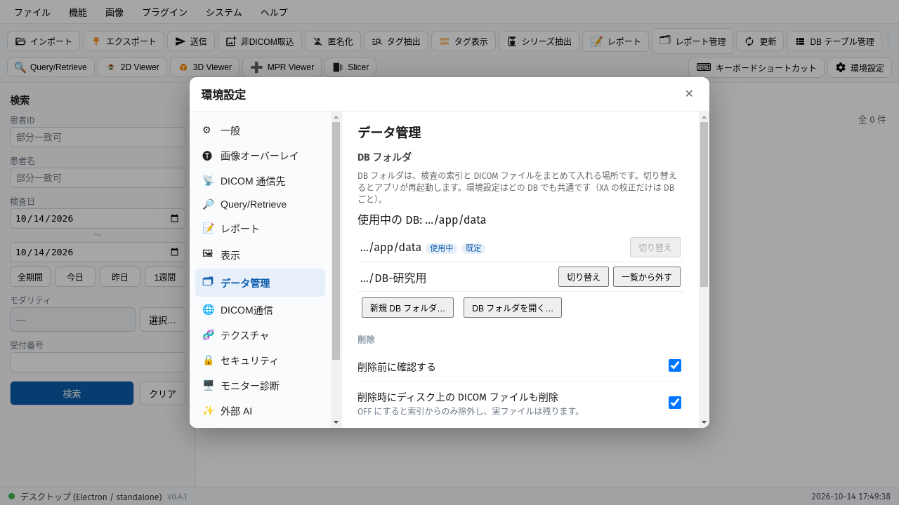
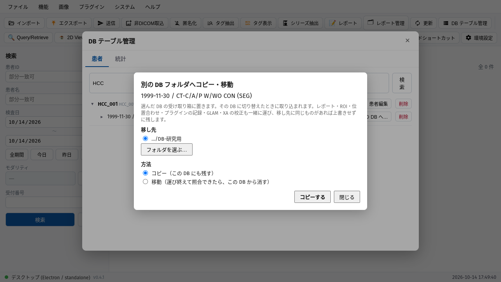
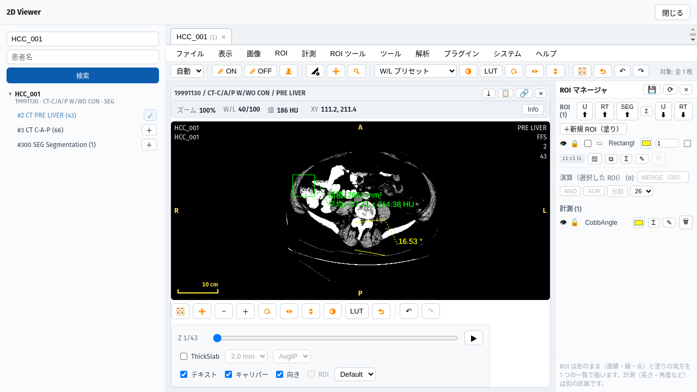
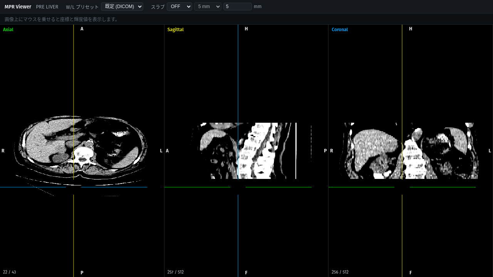
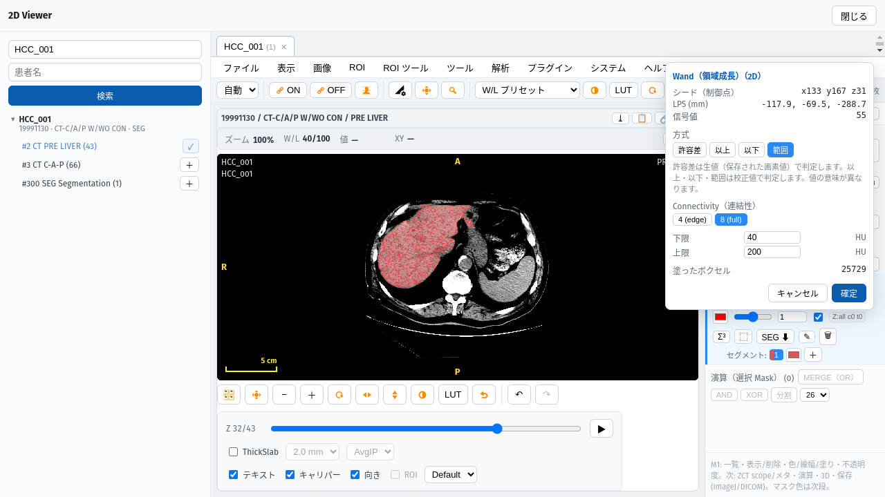
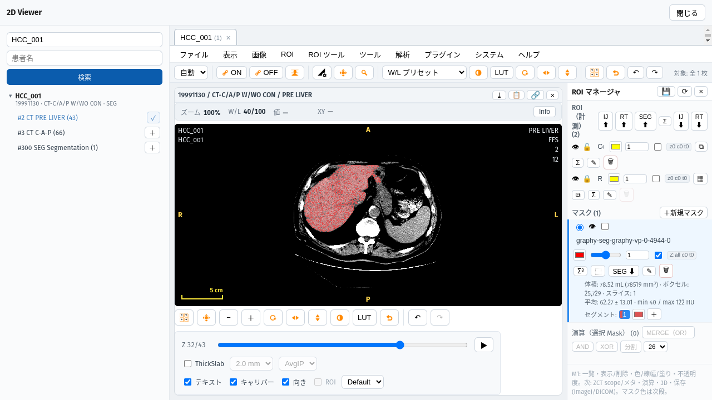
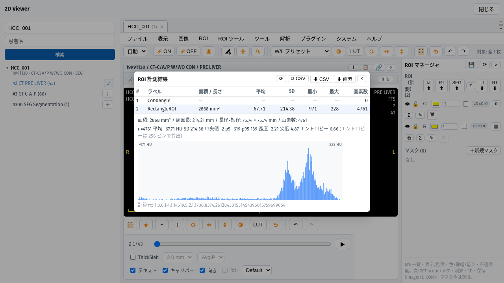
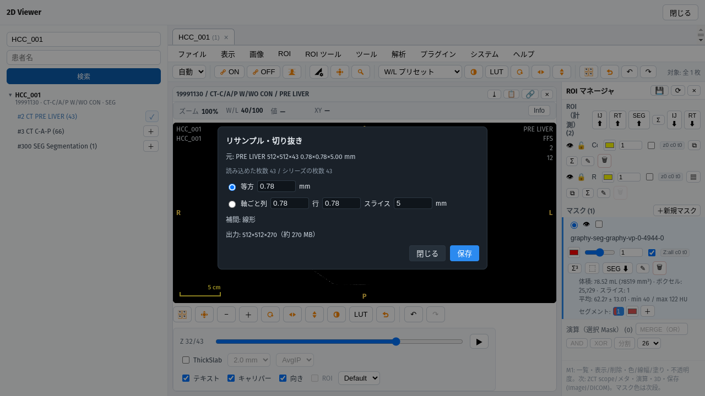

GRAPHY-NEXT v0.4.1 / 操作ガイド
検査の索引と画像をまとめた「DB フォルダ」を、研究ごと・外付けディスクなどに分けて使えるようになりました。検査を別の DB フォルダへコピー・移動することもできます。あわせて 2D・MPR・ワンド・ROI 統計などの改良が入っています。
環境設定 ＞ データ管理 ＞ DB フォルダ新しく作る・既存のものを開く・一覧から切り替える。切り替えるとアプリが再起動します
DB テーブル管理で検査の「別の DB へ…」コピーか移動を選ぶ。移し先は、次にその DB を開いたときに取り込まれます
環境設定（表示・通信先など）はどの DB でも共通DB フォルダの中には、検査の索引と DICOM ファイルだけが入ります
STEP 1 / 環境設定 ＞ データ管理 ＞ DB フォルダ

いま使っている DB（使用中）。最初からある DB は「既定」
前に使った DB。「切り替え」で再起動して切り替わります
空のフォルダを選び、新しい DB を作る
別の PC で作った DB・複製した DB を開く
画像はフォルダからの相対パスで記録します。フォルダごと複製・移動しても開けます。
外付けディスクが見つからないときは、再試行・既定の DB で起動・終了を選べます。
STEP 2 / DB テーブル管理 ＞ 検査の「別の DB へ…」

移し先の DB フォルダ。一覧に無いものは「フォルダを選ぶ…」から
方法。コピーは今の DB にも残し、移動は運び終えて照合できたら今の DB から消します
「コピーする」（移動のときは「移動する」）
レポート・ROI・位置合わせ・プラグインの記録なども一緒に運びます。移し先に同じものがあれば、上書きせずに残します。
移し先の DB に切り替えたときに取り込まれ、右下に件数が出ます。
STEP 3 / 2D ビューアの改良

ROI メニューの Cobb 角。離れた 2 本の線のなす角を測ります
ロック（ROI マネージャの 🔒）。動かず、Delete・ゴミ箱・全消去でも消えません
📋 で画像をクリップボードへコピー。ROI があれば「ROI も含めてキャプチャしますか？」と聞きます（四隅の文字は含みません）
拡大レンズ（4×）: 画像メニューで選び、左ボタンを押している間だけ、カーソルのまわりを 4 倍で表示します。
ロックと表示・非表示は保存され、開き直しても残ります。
STEP 4 / MPR Viewer

各面に、ほかの 2 面の位置が線で出ます。画像をクリックすると、3 面がその点へ移ります。
以前の版では、色の渡し方の誤りで十字線が描かれていませんでした（クリックで移る操作は動いていました）。
線の色は 環境設定 ＞ 表示 ＞ MPR の「十字線の色」で、面ごとの色（Axial 緑・Sagittal 黄・Coronal 青）か単色（色も選べる）を選べます。
設定を変えたら、MPR を開き直すと反映されます。
STEP 5 / ROI ツール ＞ 2D Wand

方式に以上・以下・範囲が加わりました。HU・SUV などの校正値で判定します
下限（以上・範囲のとき）
上限（以下・範囲のとき）
塗ったボクセルの数。上限（400 万）で打ち切ったときは警告が出ます
「許容差」（既定）は今までどおり保存された画素値で判定します。値の意味が違うので注意してください。
シードが条件の外なら理由が出ます。校正の無い画像（カラーなど）では、以上・以下・範囲は選べません。
STEP 6 / ROI マネージャ ＞ マスクの Σ³

Σ³ でマスクの 3D 統計を出します
体積（mL）・ボクセル数・スライス数と、平均 ± SD・最小・最大。単位は 2D の ROI と同じ（CT は HU、PET は SUVbw など）
PET（SUV）では TLG（平均 × 体積）の行が出ます。CT・MR では出ません。
値を読めないスライスがあるときは、平均などを出さずに「値を読めないスライス n 枚」と表示します（体積とボクセル数は出ます）。
STEP 7 / ROI 計測結果 ＞ 画素の書き出し

⬇ 画素: 選んでいる ROI の、統計に使った画素を 1 行 1 画素で保存します（roi-pixels-番号.csv）
書き出す ROI の行。行数は「画素数」と同じで、値の平均は「平均」と一致します
列は ラベル・ROI の ID・col・row・x/y/z（患者座標 LPS の mm、画素の中心）・値（単位つき）・画像 ID です。
位置の情報が無い画像（XA など）では x/y/z を空欄にします。線の ROI では押せません。
STEP 8 / 画像 ＞ リサンプル・切り抜き…

元のシリーズの大きさと画素の間隔。読み込めた枚数も並べて出します
等方（全軸同じ間隔）か、軸ごと（列・行・スライス）を選びます
出力の大きさとメモリの見積り
「保存」で、引き直した画像を別のシリーズとして保存します。元のシリーズは変わりません。向きと原点は元と同じです。
間隔が 0・負・空のときは保存できません。見積りが大きすぎるときは確認が出ます。
そのほかの改良
| どこで | 何ができるようになったか |
|---|---|
| 一覧画面 | エクスプローラー・Finder からファイルやフォルダをドラッグ＆ドロップして取り込める（デスクトップ版） |
| 取り込みのあと | 一覧にいま取り込んだ検査だけを出す（検査日が今日でなくても見える）。帯の「検索条件の一覧に戻る」で元の一覧へ |
| キーボード | F で全画面（どの窓でも。Esc でも戻る）。2D ビューアで W / P / Z / L / A / R / E を押すと、W/L・移動・拡大・長さ・角度・矩形・楕円に切り替わる |
| 2D ビューアの ROI | 選択中の ROI は内側をドラッグして移動できる。Ctrl（Mac は ⌘）＋クリックで複数選択し、表示中のスライスの選択中 ROI をまとめて動かせる |
| Fusion | 操作バーの「重ね方」で差分・乗算を選べる。表示上の合成で、画素値（HU・SUV）の引き算ではない |
| 3D ビューア | 環境設定 ＞ 表示 ＞ 3D ビューアで背景色を変えられる（VR・MIP・Ortho・Slab） |
| NIfTI の取り込み | 整数でない値（ADC・T1 マップなど）を 32 bit float の Parametric Map として取り込み、単位を選べる。2D の W/L・MPR・3D・テクスチャでも扱える |
| 起動の表示 | スプラッシュの段階を「部品の準備・データベース・機能の準備」に分け、何を待っているかが分かるようにした |
| 画像の削除 | ファイルも消す設定のとき、消した画像の ROI・位置合わせ・プラグインの記録なども片付ける（レポートは残す） |
直したこと・安全性
| どこで | 直したこと |
|---|---|
| 接続の制限 | デスクトップ版の HTTP を、その PC（127.0.0.1）からだけ受けるようにした。ブラウザ経由の不正な呼び出しも塞いだ |
| DICOM TLS | TLS のパスワードを OS の鍵束に保存し、画面の API でも返さないようにした（鍵束の無い環境では、警告を出して従来どおり保存） |
| プラグイン | プラグインの導入の同意を、本体の確認の窓からしか変えられないようにした |
| 取り込み | 失敗しても元のファイルを失わない。空のフォルダや作業用のフォルダを残さない |
| 患者 ID の変更 | ROI などの記録も新しい患者 ID へ運ぶ |
| DSA | Alt＋↑ / ↓（マスクの上下のシフト）が効いていなかったのを直した |
| ROI | 開き直すとロックが外れて見えた・表示の切り替えが保存されなかったのを直した。双方向計測を ImageJ 形式で書き出すと矩形になっていたのを直した |
| 起動が遅いとき | 起動の待ち（60 秒）を超えても、あとで本体が立ち上がれば自動でつながるようにした（以前は「Disconnected」のまま） |
| 再起動（Linux） | AppImage で DB フォルダの切り替えなどの再起動が失敗していたのを直した |
変更の全体はリリースノート（GitHub の Releases）にあります。